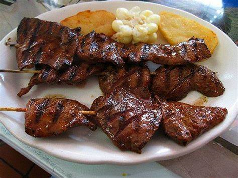

Anticuchos
Actividad
Anticuchos:
Origen: Los anticuchos tienen raíces preincaicas, pero la versión moderna fue influenciada por la llegada de los españoles.
Biografía: Son brochetas de carne marinadas en una mezcla de ají panca, ajo y vinagre.
Ingredientes: Carne de res (generalmente corazón), ají panca, ajo, vinagre y comino.
Preparación: La carne se corta en trozos, se marina en la mezcla de ají panca, ajo y vinagre, y se asa en brochetas.